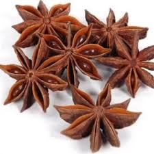

Bunga lawang (Illicium verum), atau kembang pekak, adalah rempah berbentuk bintang berujung delapan berwarna cokelat gelap dengan aroma harum khas mirip adas manis. Sebagai buah kering dari pohon cemara Tiongkok, ia kaya akan senyawa aktif seperti anetol, digunakan sebagai penyedap masakan, dan memiliki kandungan antioksidan serta antibakteri tinggi.